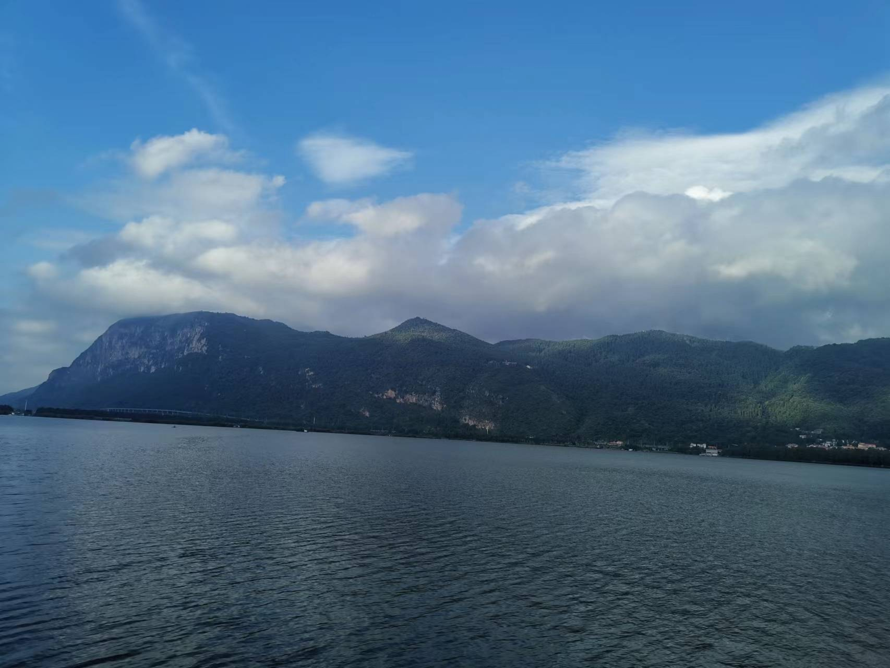

Articles
12
Tags
8
Categories
8
Home
Archives
Tags
Categories
List
Music
Movie
Link
About
Yang Bo
Home
Archives
Tags
Categories
List
Music
Movie
Link
About
海埂大坝
Created
2022-08-17
|
Updated
2022-08-24
|
Poem
|
Post View:
微风拂碧波，彩云跃青山。
鹏鸥驰长空，鲲鱼游巨澜。
登高遍荆棘，扬帆尽海浪。
双足攀峰岳，一心向远方。

Author:
Yang Bo
Link:
https://yangbo17.github.io/2022/08/17/%E6%B5%B7%E5%9F%82%E5%A4%A7%E5%9D%9D/
Copyright Notice:
All articles in this blog are licensed under
CC BY-NC-SA 4.0
unless stating additionally.
poem
Previous Post
减肥计划
Next Post
阅读计划
Yang Bo
Articles
12
Tags
8
Categories
8
Follow Me
Announcement
This is my Blog
Recent Post
tikz学习笔记
2022-09-20
Philosophy
2022-09-16
Mathematics
2022-09-15
MISC
2022-09-13
tmux学习笔记
2022-09-10